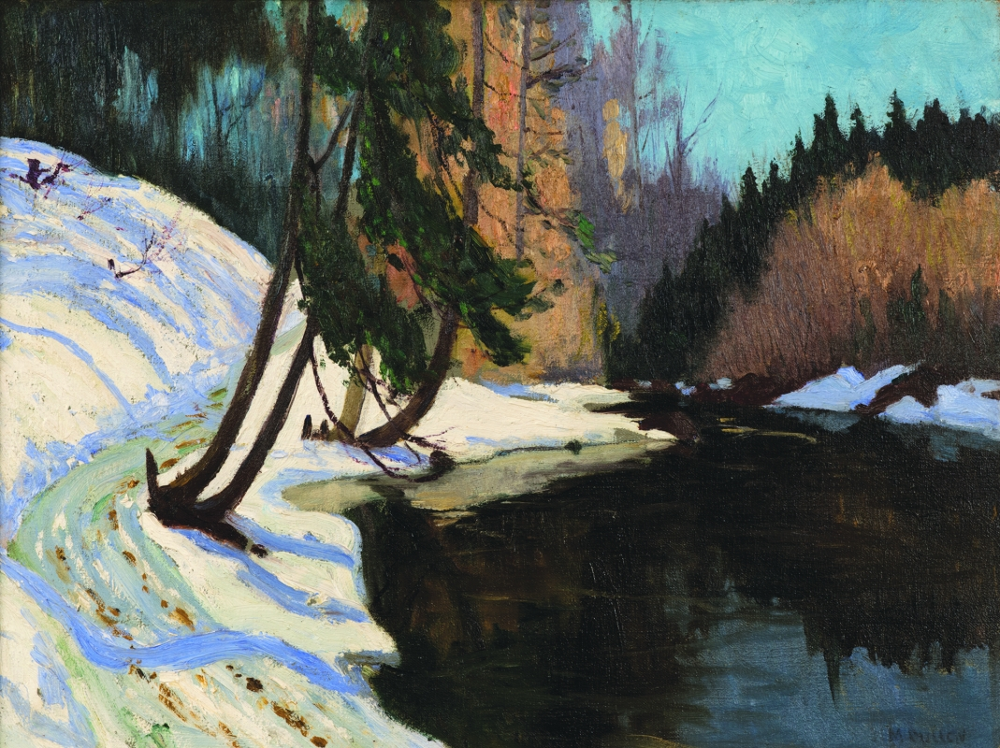

Christmas Mass
Clarence Alphonse Gagnon (1942) was a French Canadian painter, draughtsman, engraver and illustrator, from the province of Quebec. He is well known for his landscape paintings of the Laurentians and the Charlevoix region of Eastern Quebec.
A Clearing Winter
Clarence Gagnon was younger than Cullen and Suzor-Coté. He is known for his paintings of rural Quebec scenes near Baie-St-Paul, on the St. Lawrence North Shore. In the 1930s, he created a series of illustrations for Maria Chapdelaine, the classic Quebec novel of family farm life.

Youth and Sunlight
A trip to Paris to finish studies was common in the Canadian art scene at the end of the 19th century. By the 1890s, French Impressionist works by Monet, Renoir, and Degas had begun to appear regularly in Paris galleries and they greatly influenced some Canadian artists who saw them. One was Marc-Aurèle Suzor-Coté, who won a prized bronze medal at the Exposition Universelle of 1900. On returning to Quebec, he brought the Impressionists' sun-filled colours with him. He also made sculptures influenced by the style of Rodin.
Winter Lanscape
Maurice Cullen depicted canadian landscape in accordance with local terrain, light and colour. He composed his landscape paintings and pastels in keeping with European and Canadian tradition. His innovative use of luminous, impressionist-influenced colours influenced the next generation of Canadian artists, especially The Group Of Seven.